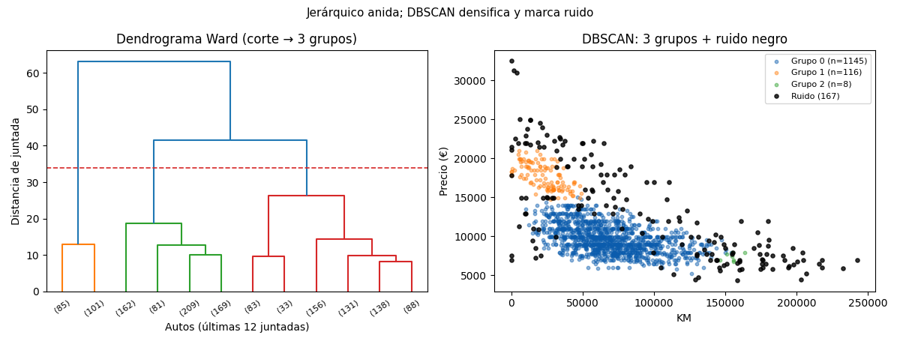

Bloque F · Clustering · Lección 0030 · mar 3 nov
Jerárquico y DBSCAN: árboles y densidades
Win de hoy: agrupar por jerarquía Ward (corte en 3: 186/621/629, como K-Means) y por densidad DBSCAN (3 grupos + 167 ruidos), más KAMILA para datos mixtos.
1 · Aglomerativo: juntar de a pares (dendrograma)
El clustering aglomerativo
empieza con 1436 grupos de 1 auto y junta a los más cercanos hasta quedar uno. El
dendrograma
dibuja esas juntadas: cortarlo a una altura da los grupos (línea roja → 3: 186/621/629, casi idénticos a K-Means —
buena señal). Ward junta minimizando varianza interna. Su primo
divisivo hace lo
inverso (parte el todo); es más caro y se usa poco.
from scipy.cluster.hierarchy import linkage, fcluster
Z = linkage(Xs, method="ward")
grupos = fcluster(Z, 3, criterion="maxclust") # 186 / 621 / 6292 · DBSCAN: densidad y ruido explícito (0008, Bloque B, vuelve)
DBSCAN junta lo que tiene ≥10 vecinos a ≤0,35 y declara ruido al resto: 3 grupos + 167 negros. Diferencias con K-Means: no pide k, acepta formas libres y muestra lo inclasificable en vez de forzarlo. Costo: eps se calibra a mano (0031, mié 4) y con densidades mezcladas sufre.
3 · KAMILA: cuando hay números y etiquetas
¿Clusterizar KM + Fuel_Type juntos? K-Means no sabe de etiquetas.
KAMILA mezcla
distancia euclídea (números) con coincidencia (etiquetas): diesel viejo con diesel viejo, naftero joven con naftero
joven. Fuera de scikit-learn (paquete kamila): concepto del programa, demo opcional.
4 · Figura: árbol y densidades

Regenerar la figura (mismo resultado versionado en assets/img/toyota/):
python scripts/make_figures.py --only jerarquico-dbscan5 · Quiz (auto-chequeo inmediato)
6 · Fuente primaria y cierre
Para profundizar (1 fuente): Tan, Steinbach & Kumar, Introduction to Data Mining — capítulo de clustering jerárquico y por densidad (dmbook, también en RESOURCES.md del curso).
Orden Bloque F: seguí en la lección 0050 (mar 3: K-medoids, el primo robusto).
¿Algo no quedó claro? Preguntame al agente: dónde cortar tu dendrograma, cómo calibrar eps, o jerárquico vs K-Means para tu caso. Esa pregunta vale más que releer.